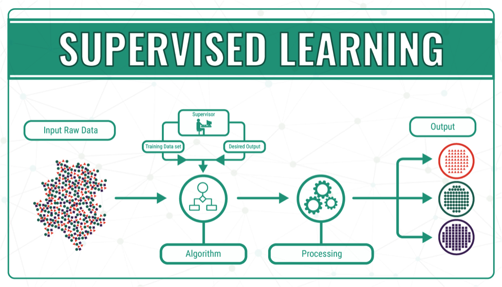

There are three main steps when it comes to machine learning. The first step is deciding
the estimated pattern of the given data. The machine learning algorithms will be given and input
data that could be labelled or unlabelled and it is the machine learning algorithm's job to predict the
data. Next, the error function checks the accuracy of the prediction of the model sometimes by comparing it
to an already known model, if a model is given. Lastly, the model of the training data is optimised by changing
the weights in order to reach the accuracy threshold between the estimated model and the known model.
Click to see map of Machine Learning
Machine Learning Methods
Machine learning is separated into three types of methods: supervised, semi-supervised,
and unsupervised. Supervised machine learning is the process of machine learning where labeled
training data sets are used in order to avoid overfitting or underfitting due to its ability to adjust
its weights. This type is used in neural networks, linear regression, naïve bayes, etc.
Unsupervised machine learning, unlike supervised machine learning, uses unlabeled training data
to perform its task. Unsupervised machine learning is used to find groupings and patterns without human
intervention. Examples of unsupervised machine learning are principal component analysis and k-clustering.
Semi-supervised machine learning is the in-between method of supervised and unsupervised machine learning
where the labeled data set is used to classify from the larger unlabeled data set. This method is useful
for when there isn't enough labeled data to train the supervised algorithm.
Supervised Learning
Supervised learning happens when there is a clear target for each output. The neural network will attempt to learn the patterns and adjusts its weights during training in order
to be able to acquire the correct target for each input. Click to show more information...
Semi-supervised Learning
As the name suggests, semi-supervised learning is a form of machine learning that cannot be categorized as either supervised or unsupervised, since it shares qualities of both
styles to a certain extent. To be specific, this method uses both labeled and unlabeled data in the dataset. Click to show more information...
Unsupervised Learning
Unsupervised learning is the exact opposite of supervised learning. This method is useful for clustering or grouping problems. The reason it is called "unsupervised" is bacause, unlike
in supervised learning, unsupervised learning does not have any entity to tell it that it is predicting wrong results. In other words, unsupervised learning does not require any labelled data.
Click to show more information...
Supervised learning happens when there is a clear target for each output. The neural network will attempt to learn the patterns and adjusts its weights during training in order
to be able to acquire the correct target for each input. Supervised learning requires the programmer to provide a dataset of inputs and outputs. To give an example, if we want to
predict a handwritten kanji character, we can use dataset of handwritten kanji characters paired with the text (readable by the computer) of that kanji.
Here, the input is the handwritten kanji while the target/output is the text version of that character.

Image credits: https://bigdata-madesimple.com/machine-learning-explained-understanding-supervised-unsupervised-and-reinforcement-learning/
During learning, the neural network will attempt to predict the target of an input. Since the network has not learned anything yet, the result has a high chance to be completely
innaccurate. From here, the network will calculate something called a loss, which denotes wrong was the network. Specifically, a numerical representation of how far away
the predicted answer was from the target value will be generated. This number will be used by the neural network to know how to improve. From this loss value, the network adjusts
its weights. The adjusted weight values should help the neural network to yield better results. This process is repeated over and over again until the programmer decides (usually
the amount of iterations, or epochs are set before training) to stop. The final state of the neural network should be able to predict an input's targets relativelt accurately.
As the name suggests, semi-supervised learning is a form of machine learning that cannot be categorized as either supervised or unsupervised, since it shares qualities of both styles
to a certain extent. To be specific, this method uses both labeled and unlabeled data in the dataset. Semi-supervised learning is useful for doing machine learning operations with a
smaller dataset. Gathering data and labelling them might take a long time, and in some cases, may cost a lot of money. To work around this, a smaller data set is used in conjunction
with unlabeled data.
Specifically, the entire dataset can be categorized into groups using unsupervized learning. Then, in theory, data points that is part of the same group should also have similar target
values. From here, the labels for the unlabelled data points can be acquired (though it might not be totally precise). Semi-supervised learning requires the dataset to have a majority
of unlabelled data since it will be used for the unsupervised learning part of semi-supervised learning. It is necessary for the neural network to be able to perform unsupervised learning
accurately before inferring labels for data.
Unsupervised learning is the exact opposite of supervised learning. This method is useful for clustering or grouping problems. The reason it is called "unsupervised" is bacause, unlike
in supervised learning, unsupervised learning does not have any entity to tell it that it is predicting wrong results. In other words, unsupervised learning does not require any labelled data.
Instead, it simply looks at all the data and attempt to find recurrent patterns in it. After acquiring the parrterns, the neural network can easily categorize in which group or cluster
does a data point belong to. The program will not have any information on what the patterns and groups signify and it is up to the human operator to analyze the results.
Image credits: https://bigdata-madesimple.com/machine-learning-explained-understanding-supervised-unsupervised-and-reinforcement-learning/
For instance, if a programmer wants to create a machine learning program that differentiates dark colors from bright
ones, then an unsupervised machine learning method may be the most useful. The dataset here, does not need to contain labels that tells if the color is dark or bright. The dataset just requires
there to be complete specifications of each color (e.g. red, gree, and blue components).
 Image credits: https://bigdata-madesimple.com/machine-learning-explained-understanding-supervised-unsupervised-and-reinforcement-learning/
For instance, if a programmer wants to create a machine learning program that differentiates dark colors from bright
ones, then an unsupervised machine learning method may be the most useful. The dataset here, does not need to contain labels that tells if the color is dark or bright. The dataset just requires
there to be complete specifications of each color (e.g. red, gree, and blue components).
Image credits: https://bigdata-madesimple.com/machine-learning-explained-understanding-supervised-unsupervised-and-reinforcement-learning/
For instance, if a programmer wants to create a machine learning program that differentiates dark colors from bright
ones, then an unsupervised machine learning method may be the most useful. The dataset here, does not need to contain labels that tells if the color is dark or bright. The dataset just requires
there to be complete specifications of each color (e.g. red, gree, and blue components).